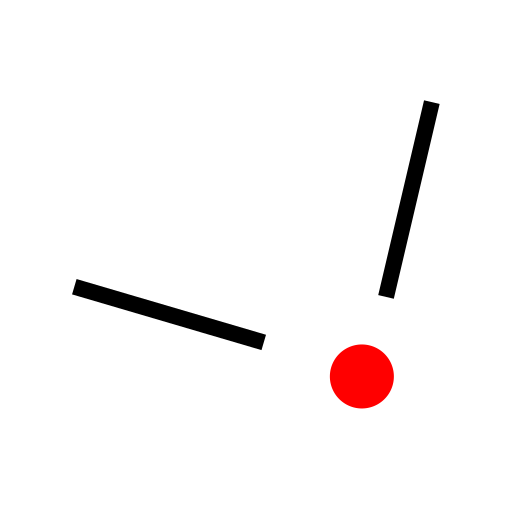
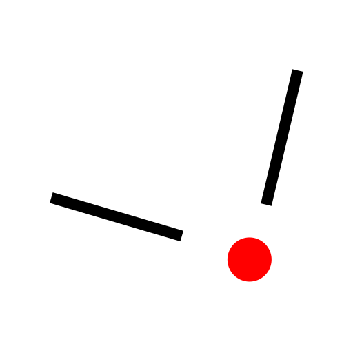
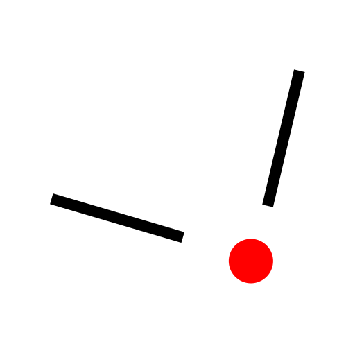

Menu: Pritrdi > Navodila presekov
Shortcut: S, Y
Commands: snapintersectionmanual | sy

Opis:
Včasih ne deluje orodje za lovljenje presečiščnih točk, ker željena presečiščna točka ne leži na enem ali obeh objektih, temveč izven. To orodje omogoča določitev obeh udeleženih objektov, preden je presečiščna točka ujeta. Tako je mogoče ujeti tudi nevidne točke izven objekta.